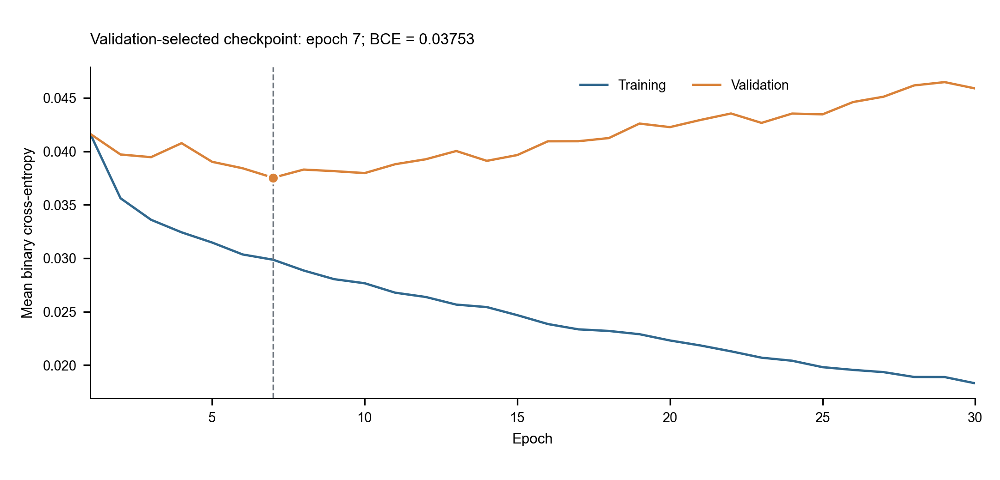
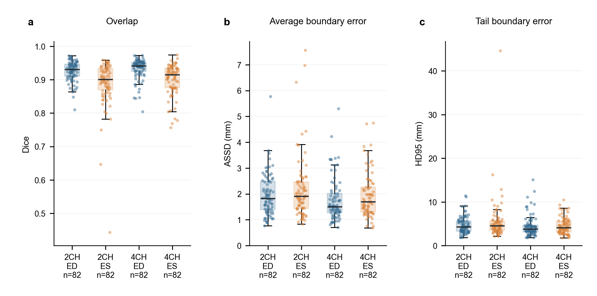
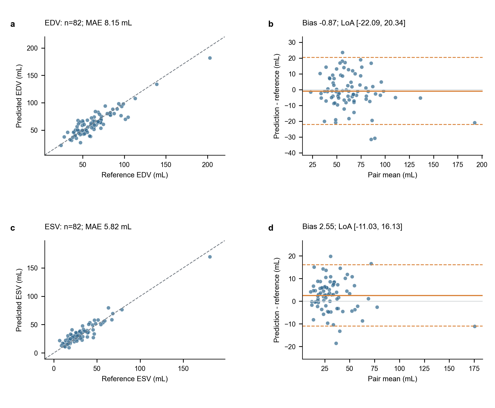
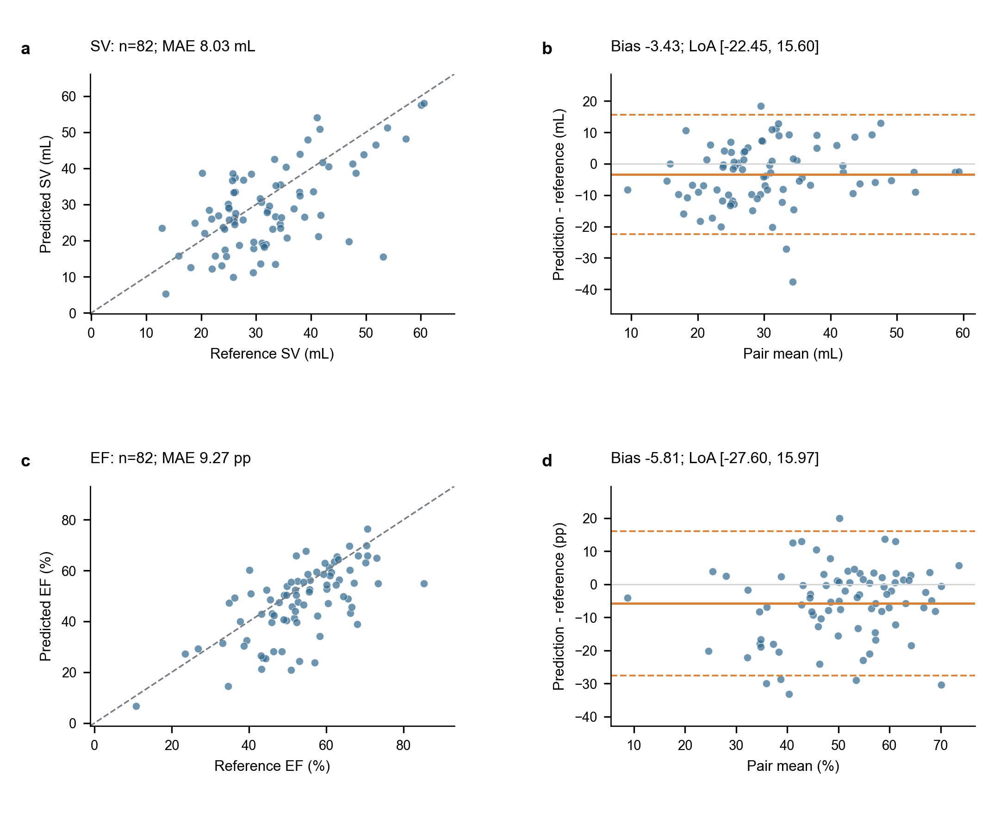
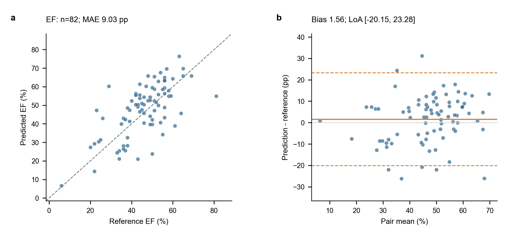
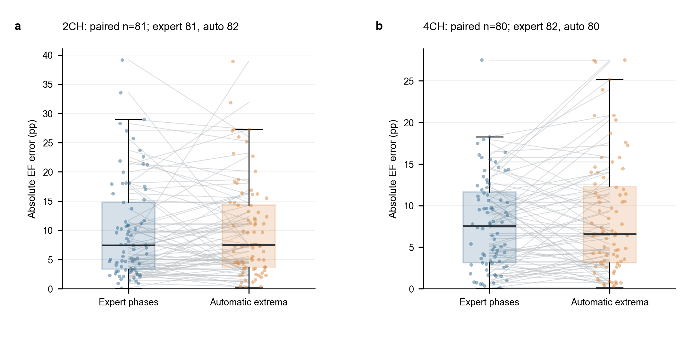
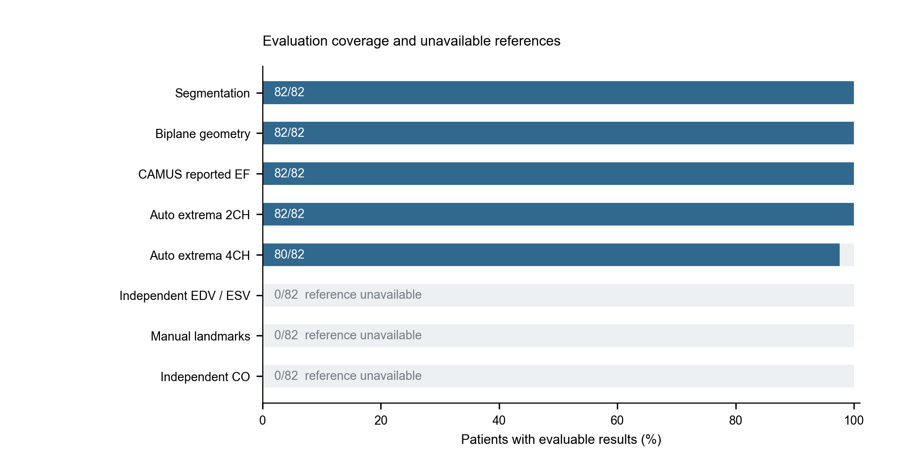
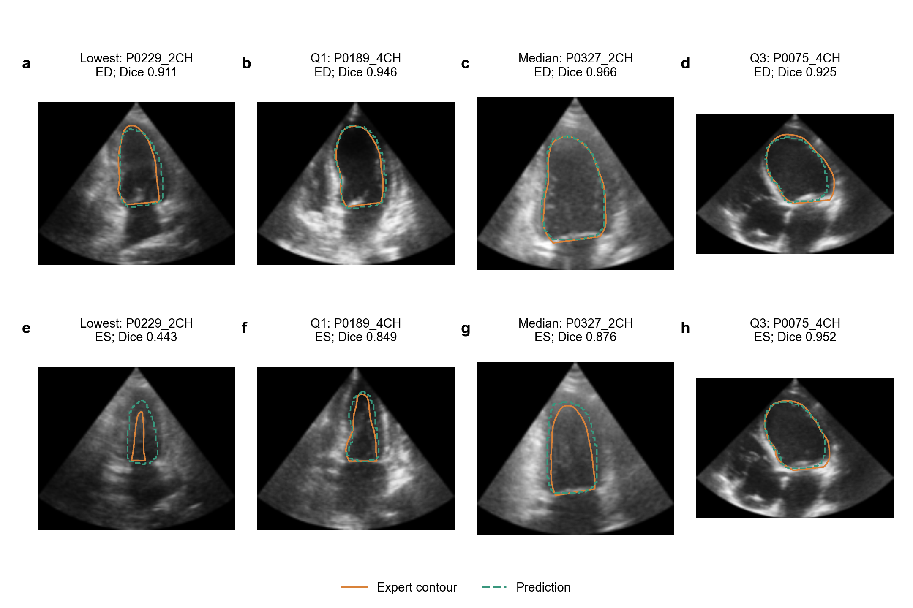
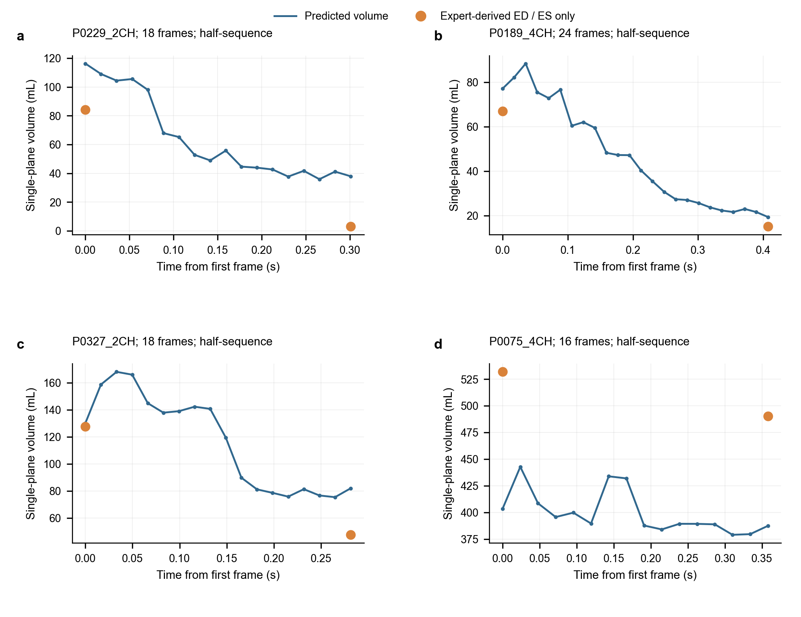
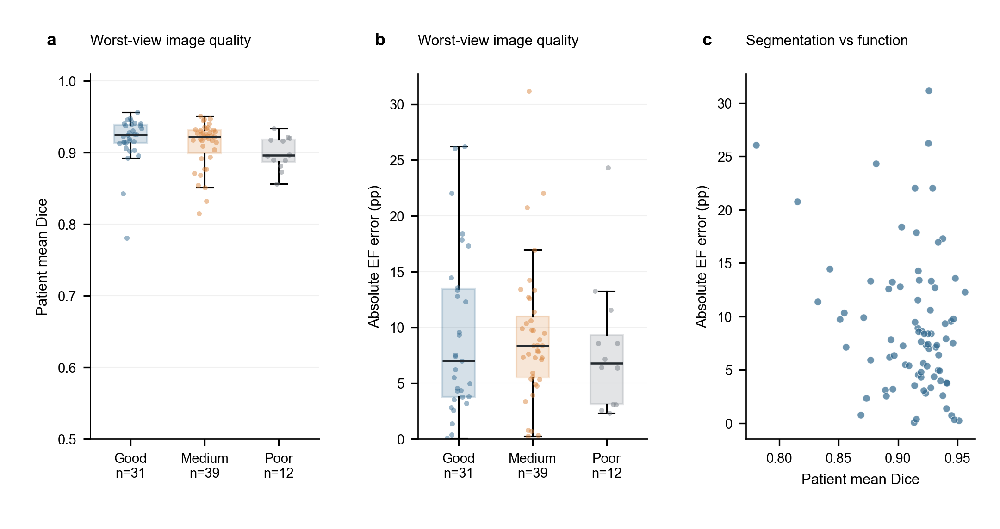

固定实验：camus_cuda_progress · 82 位测试患者 · Dice 0.9119 · 报告 EF MAE 9.03 个百分点。半周期研究基线；无独立 CO 和人工关键点验证。
完整中文解读 · 全部图件 PDF · 文献与参考图分析 · 统计与置信区间 · 数据与权重审计

图 1｜训练和验证损失。训练集 347、验证集 71 位患者；最小验证 BCE 出现在第 7 轮（0.03753）。虚线和圆点标识验证选模轮次。后期训练损失继续下降而验证损失上升，提示过拟合。这是单次运行的实测记录，不显示虚构的重复实验区间，也没有使用测试损失选模。
PDF 矢量版 · SVG 可编辑版
图 2｜切面和相位分层的左室分割性能。每组最多 82 位患者，每个点是一位患者在该切面/相位上的一张标注帧。全部有效观测均显示；箱体为四分位范围，横线为中位数，须延伸至 1.5×IQR 范围内的最远点。ASSD 和 HD95 在原始坐标、原始像素间距下计算，单位 mm；非毫米或不可定义的边界距离不混入。四组来自相同患者，不是四个独立队列。
PDF 矢量版 · SVG 可编辑版
图 3｜EDV、ESV 的患者级一致性。参考为专家 ED/ES 轮廓经过相同双平面几何法计算的参考值；它不是独立临床容积真值。每点一位患者；左侧虚线为恒等线。右侧为 Bland–Altman：横轴为预测/参考均值，纵轴为预测减参考，橙实线为偏倚，橙虚线为偏倚±1.96×患者差值样本标准差。EF 的误差单位为百分点 pp，EF 水平单位为 %；这些描述性界限不是预先定义的临床等效界值，也不是逐搏重复测量界限。MAE 的患者 bootstrap 95% 区间、n 和全部配对数据见 source_data。
PDF 矢量版 · SVG 可编辑版
图 4｜SV、EF 的患者级一致性。参考为专家 ED/ES 轮廓经过相同双平面几何法计算的参考值；它不是独立临床容积真值。每点一位患者；左侧虚线为恒等线。右侧为 Bland–Altman：横轴为预测/参考均值，纵轴为预测减参考，橙实线为偏倚，橙虚线为偏倚±1.96×患者差值样本标准差。EF 的误差单位为百分点 pp，EF 水平单位为 %；这些描述性界限不是预先定义的临床等效界值，也不是逐搏重复测量界限。MAE 的患者 bootstrap 95% 区间、n 和全部配对数据见 source_data。
PDF 矢量版 · SVG 可编辑版
图 5｜EF 的患者级一致性。参考为CAMUS Info.cfg 记录的 EF；它与同法轮廓参考分开评价，不称为独立前瞻临床金标准。每点一位患者；左侧虚线为恒等线。右侧为 Bland–Altman：横轴为预测/参考均值，纵轴为预测减参考，橙实线为偏倚，橙虚线为偏倚±1.96×患者差值样本标准差。EF 的误差单位为百分点 pp，EF 水平单位为 %；这些描述性界限不是预先定义的临床等效界值，也不是逐搏重复测量界限。MAE 的患者 bootstrap 95% 区间、n 和全部配对数据见 source_data。
PDF 矢量版 · SVG 可编辑版
图 6｜专家相位与自动极值选相位的 EF 误差配对比较。灰线连接同一患者；参考均为该切面专家 ED/ES 轮廓经单平面面积–长度法计算的 EF。仅在两种方法都有效的患者上比较，完整可用数和配对数写在标题。因此有意排除不能成对的患者，并在 source_data/coverage.csv 保留方法总覆盖数。自动相位只在现有半序列内寻找 ED 后的 ES，不能解释为完整周期识别。未进行显著性检验。
PDF 矢量版 · SVG 可编辑版
图 7｜有效评价覆盖率。分母为全部尝试测试患者；条内标注有效数/尝试数。独立临床容积、人工关键点和独立 CO 的零覆盖意味着没有参考标签，不代表零误差或测量准确。几何可计算率不等于经人工确认的临床有效覆盖率。
PDF 矢量版 · SVG 可编辑版
图 8｜预先声明排名规则选择的失败与典型病例。对全部测试切面按 ED/ES 平均 Dice 排序，选择最差、25%、50%、75% 位置（排序稳定，见 example_selection.csv）；并非随机抽样或独立成功率证据。上排 ED，下排 ES；橙实线为原始专家轮廓，绿虚线为本轮预测掩膜恢复后的轮廓。图像为已有 112×112 处理帧重采样至原始显示坐标，不是恢复出原始图像细节；原始专家标签没有缩放后再充当真值。显示范围按物理空间补至方形，保留横纵比例；图中所有 Dice 均在原始标签上重新核对。
PDF 矢量版 · SVG 可编辑版
图 9｜与图 8 相同病例的原始半周期单平面容积预测。横轴在元数据支持时使用由 Info.cfg 帧率推导的时间，并非设备原始采集时间戳。蓝线为本轮逐帧预测，断点保留无效/缺失帧；橙点仅在专家 ED/ES 帧上，由专家轮廓经相同单平面公式计算，不连接或插值成中间真值。保留原始帧序，不反转、反射或拼接成完整心搏。不同病例独立，不连接成长期趋势；不推导 HR/CO。
PDF 矢量版 · SVG 可编辑版
图 10｜患者级探索性误差关联。每位患者的图像质量按其两个切面中较差等级汇总（Good<Medium<Poor），Dice 为该患者全部标注帧的平均，EF 误差对 CAMUS Info.cfg EF 计算。各患者仅计一次。箱线图定义同图 2；右图用于检查分割重叠和功能误差是否一致变化，不进行因果推断或显著性筛选。质量等级不平衡和几何假设都可能影响结果；高 Dice 不能自动证明 EF 准确。
PDF 矢量版 · SVG 可编辑版CAMUS: Leclerc et al., IEEE TMI (2019), DOI 10.1109/TMI.2019.2900516 · CC BY-NC-SA 4.0。图件分析不替代临床验证。